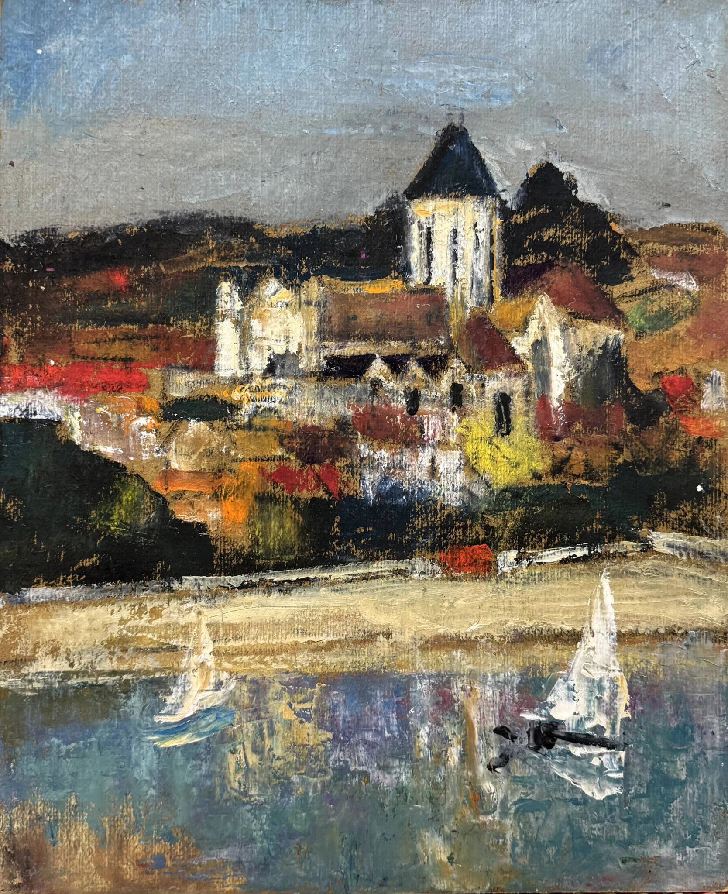

Présentation de l'œuvre
Voiles devant la ville est une peinture à l’huile sur carton mince de René Charles Bellanger. Le titre évoque la présence de voiles au premier plan d’un paysage urbain, et suggère une rencontre entre l’univers maritime et la silhouette de la ville. Cette lecture reste une interprétation du titre ; l’observation directe de l’image permet d’en préciser la composition.
L’œuvre n’est pas signée. Sa date d’exécution n’est pas documentée à ce jour.
L'artiste
René Charles Bellanger (1895–1964) est un peintre français dont le parcours est étroitement lié à Dreux et à sa région. Il a consacré une part importante de son travail aux paysages, aux lieux et aux atmosphères qu’il observait au fil de sa vie. Sa pratique artistique s’est développée parallèlement à une activité professionnelle dans le domaine du machinisme agricole.
Données techniques
- Artiste : René Charles Bellanger (1895–1964)
- Titre : Voiles devant la ville
- Date : non documentée
- Technique : huile sur carton mince
- Dimensions : 41 × 33 cm
- Signature : non signée
Formation et parcours artistique
Né à Angicourt, dans l’Oise, le 2 décembre 1895, René Bellanger découvre très jeune la peinture. En 1909, la rencontre avec le peintre Diogène Maillart, alors présent dans l’église du village, suscite son intérêt pour les arts. Il suit des cours du soir auprès de lui, tandis que ses parents l’orientent vers des études de dessin industriel.
Mobilisé en 1914, il continue à dessiner et à pratiquer la gravure pendant son service militaire. En 1919, alors qu’il se trouve en Rhénanie, il commence à peindre des paysages. Installé à Dreux en 1923, il travaille dans un atelier de machines agricoles avec son frère. Il rencontre ensuite le peintre paysagiste Pierre Eugène Montézin, qui l’encourage dans sa pratique.
En 1927, il devient membre de la Société des Artistes Indépendants. Il y côtoie notamment des artistes tels que Maximilien Luce et Paul Signac. Il peint régulièrement les paysages de Dreux et de ses environs, en particulier ceux de Chérisy, qu’il représente à différentes saisons. Il transforme même sa voiture en atelier mobile afin de peindre en plein air.
La destruction de son domicile et de ses ateliers lors des bombardements de 1944 marque une rupture dans son parcours. Après la guerre, sa peinture évolue vers une palette plus sombre, avec une influence évoquée de Maurice de Vlaminck. En 1963, il s’installe à Chartres, où il peint notamment la cathédrale. Il meurt à Paris le 5 décembre 1964.
Expositions et distinctions
- 1927 : devient membre de la Société des Artistes Indépendants.
- 1936 : médaille d’argent pour son œuvre Boulevard de la Gare à Dreux et des vues associées.
- 1995 : exposition rétrospective à la Chapelle de l’Hôtel-Dieu de Dreux, du 28 octobre au 26 novembre.
- 2010 : rétrospective au Musée d’Art et d’Histoire de Dreux.
Une exposition de 114 toiles était préparée à Chartres pour avril 1964. Les éléments consultés ne permettent toutefois pas de confirmer qu’elle a effectivement eu lieu.
Galerie — Autres œuvres de René Charles Bellanger


SOURCES
M Ta Ville — Peintres Drouais du XXe siècle, 2
MUDO — Catalogue des publications, référence à René Bellanger (1895–1964)
Les informations techniques et les dimensions de l’œuvre
proviennent des données de la collection.